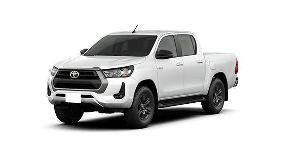

Hilux
A Partir De R$272.190,00Para Mais informações:
Descrição do Carro
A Toyota Hilux é uma picape robusta e confiável, reconhecida mundialmente por sua durabilidade, capacidade off-road e versatilidade para trabalho e lazer. É uma escolha popular entre aqueles que necessitam de um veículo resistente e capaz de enfrentar diversos tipos de terreno.